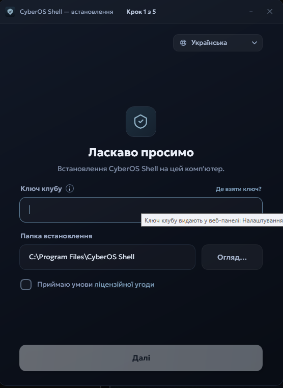
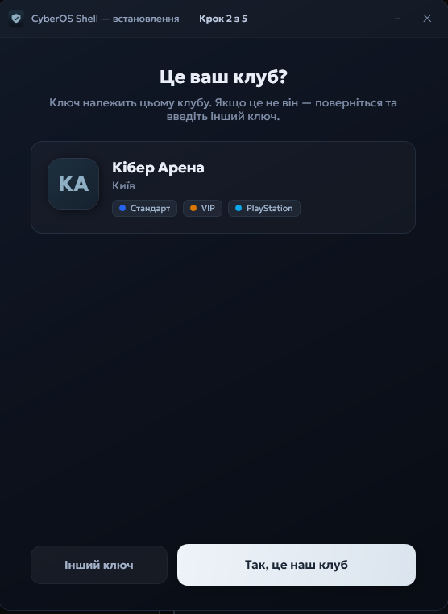
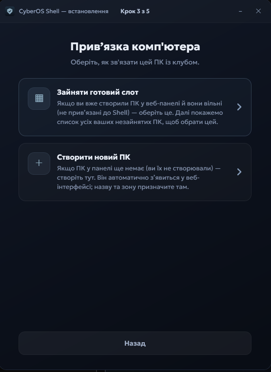
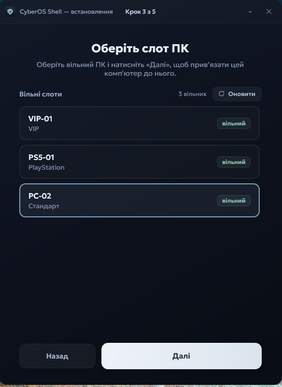
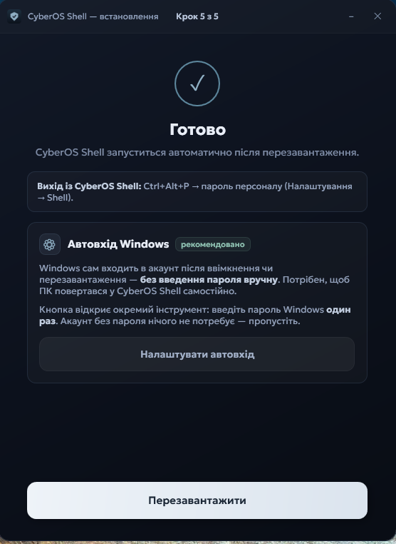
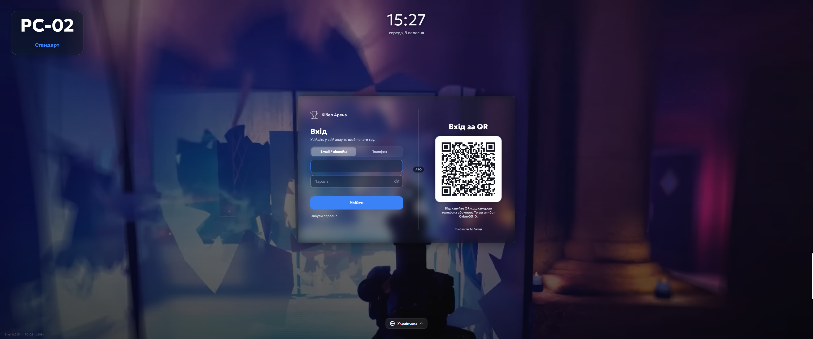
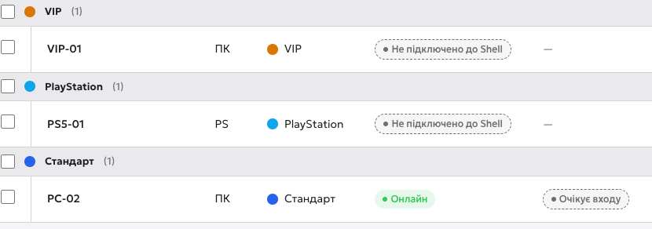

Перед запуском інсталятора
Це вже не браузер, а сама ігрова машина. До запуску інсталятора потрібні
три речі з розділу 5: файл Shell-Setup-…exe,
ключ клубу й пароль вищого доступу, заданий у панелі.
Пароль без встановлення задати можна, а от вийти з кіоску без нього — ні.
- 1Скопіювати ключ — ключ клубу в буфер. Саме його інсталятор питає на першому екрані. Ключ один на весь клуб і показувати його стороннім не варто.
- 2Ліцензійна угода — те саме, що інсталятор попросить прийняти на клубному ПК.

Крок 1 з 5: ключ і папка
Перший екран інсталятора. Вставляєте ключ клубу, лишаєте папку за замовчуванням і приймаєте ліцензію.
- 1Ключ клубу — той самий, що ви скопіювали в панелі: Налаштування → Shell → «Основне». Вставляється з буфера, вводити руками не треба.
- 2«Де взяти ключ?» — інсталятор сам підказує шлях у веб-панелі, якщо ключа немає під рукою.
- 3Папка встановлення — лишайте як є. Змінюйте лише за потреби.
- 4Ліцензійна угода — поки галочки немає, кнопка «Далі» неактивна.
- 5Мова інсталятора — не мова екрана гостя. Мови для гостя ви вже вибрали в панелі.

Крок 2 з 5: це ваш клуб?
Інсталятор показує, якому клубу належить ключ. Це ваша страховка від чужого ключа й від встановлення в чужий клуб.
- 1Картка вашого клубу — назва, місто й зони. Це перевірка, що ключ від правильного клубу: якщо тут чужа назва, ви вставили не той ключ.
- 2«Так, це наш клуб» — підтверджуєте й ідете далі.
- 3«Інший ключ» — повертає на перший крок, щоб вставити інший.

Крок 3 з 5: прив’язка до пристрою
Тут інсталятор питає, ким саме є ця машина у вашому клубі. Два шляхи — і саме тут стає видно, для чого в розділі 2 ми створювали пристрої.
- 1Зайняти готовий слот — коли пристрої вже створені у веб-панелі (розділ 2). Інсталятор покаже список вільних ПК, ви оберете, яким саме є ця машина.
- 2Створити новий ПК — коли в панелі пристроїв ще немає. ПК зʼявиться у веб-інтерфейсі сам, а назву й зону ви призначите вже там.

- 1Вільний слот — обираєте той, що відповідає цій машині. Тут PC-02 із зони «Стандарт».
- 2«Оновити» — якщо ви щойно додали пристрій у панелі й він ще не зʼявився у списку.
- 3«Далі» — прив’язує машину до слота й починає встановлення.

Кроки 4 і 5: встановлення й перезавантаження
Четвертий крок проходить сам — інсталятор копіює файли й налаштовує службу. На пʼятому лишається два рішення.
- 1Вихід із кіоску: Ctrl+Alt+P — і пароль персоналу, який ви задали в панелі. Запишіть цю комбінацію: без неї з екрана гостя не вийти.
- 2Автовхід Windows — рекомендовано. Windows заходить в акаунт сам після перезавантаження, тож ПК повертається в Shell без адміністратора.
- 3«Перезавантажити» — після нього машина стартує вже в Shell.

- 1Пароль вищого доступу — та сама сторінка панелі, Налаштування → Shell, нижче блоку встановлення. Це пароль, який Shell питає після Ctrl+Alt+P на клубному ПК.
- 2Рівень блокування — «Максимальний» ховає від гостя все, крім Shell. Саме тому вихід і потрібен.

Перевірка: Shell працює
Після перезавантаження машина стартує вже не в Windows, а в екрані входу Shell. Ось так це виглядає на живому ПК.
- 1Назва ПК — те саме імʼя й зона, що у веб-панелі. Якщо назва не та, ви прив’язали машину до чужого слота.
- 2Ваш клуб на екрані входу — той, що ви підтвердили на другому кроці.
- 3Вхід за QR — гість сканує код телефоном або через Telegram-бот CyberOS ID. Пароль вводити не обовʼязково.

Той самий ПК у веб-панелі
Остання перевірка — з боку панелі. Обладнання має показати цю машину онлайн. Це і є та зв’язка, за якою ви далі керуєте залом з одного екрана.
- 1Онлайн — Shell на цій машині звʼязався з системою. Це і є підтвердження, що встановлення вдалося.
- 2«Очікує входу» — ПК готовий, але гість ще не зайшов.
- 3«Не підключено до Shell» — так виглядають пристрої, на які Shell ще не ставили. Порівняйте з рядком PC-02.

Відео: встановлення покроково
Прохід усіма екранами інсталятора на живій Windows-машині — до фінального екрана Shell на ПК і рядка «Онлайн» у панелі. Ключ клубу в кадрі розмитий.
Далі
Машини в Shell — тепер потрібні ті, хто за ними сидить. Розділ 7: клієнти клубу.
- QR клубу — гість реєструється сам і сам зʼявляється у ваших клієнтах.
- Клієнт вручну — картка з паролем, коли гість без телефона.
- Перевірка — цей клієнт заходить у Shell на клубному ПК.